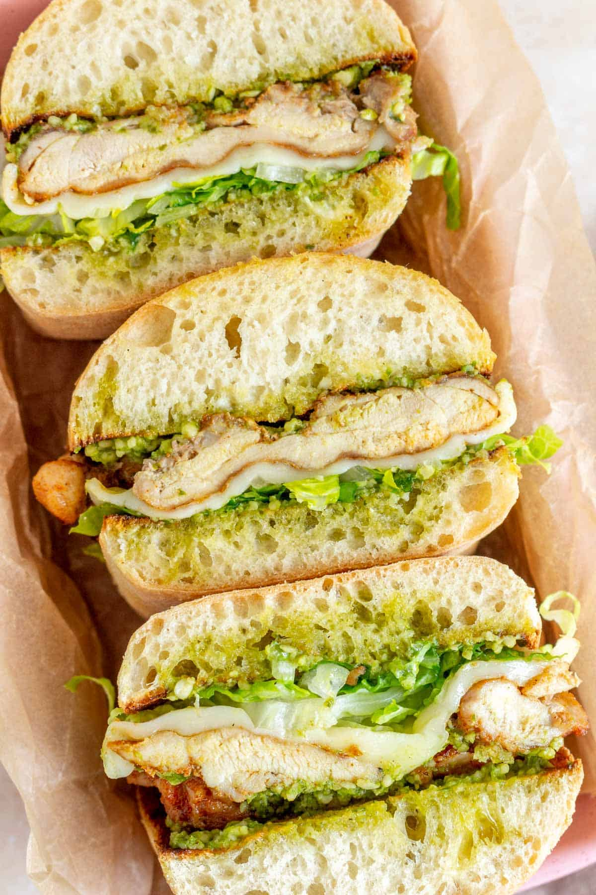

Chicken Pesto Sandwhich

Description
The chicken pesto sandwich is a fresh, flavorful twist on a classic sandwich. Juicy grilled chicken pairs with bright basil pesto, melted mozzarella, and ripe tomato, all stacked on crusty bread.
It's filling enough for dinner but quick enough for lunch, and toasting the bread at the end makes it warm, crispy, and melty all at once.
Ingredients
- 1 boneless, skinless chicken breast
- 1 tablespoon olive oil
- Salt and pepper to taste
- 2 slices of ciabatta or sourdough bread
- 2 tablespoons basil pesto
- 2 slices of fresh mozzarella
- A handful of fresh spinach or arugula
- 1 tablespoon butter (optional, for toasting)
Steps
- Season the chicken breast with salt and pepper on both sides.
- Heat the olive oil in a pan over medium heat.
- Cook the chicken for 5 to 7 minutes per side, until it's no longer pink inside.
- Let the chicken rest for 5 minutes, then slice it thinly.
- Spread the pesto on one side of each slice of bread.
- Layer the chicken, mozzarella, and greens on one slice.
- Top with the second slice, pesto side down.
- Butter the outside of the bread and toast the sandwich in a pan over medium heat for 2 to 3 minutes per side, until golden and the cheese melts.
- Cut in half and serve.
Homepage